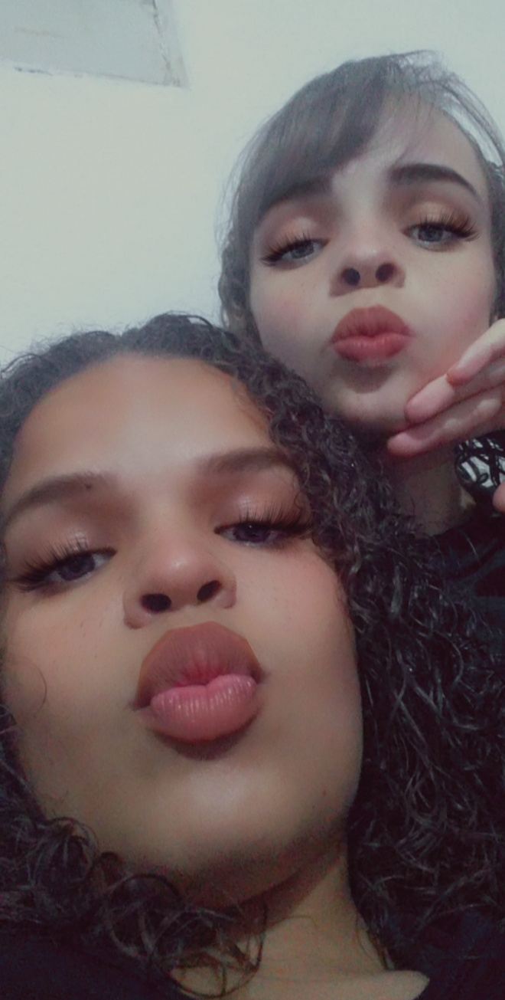
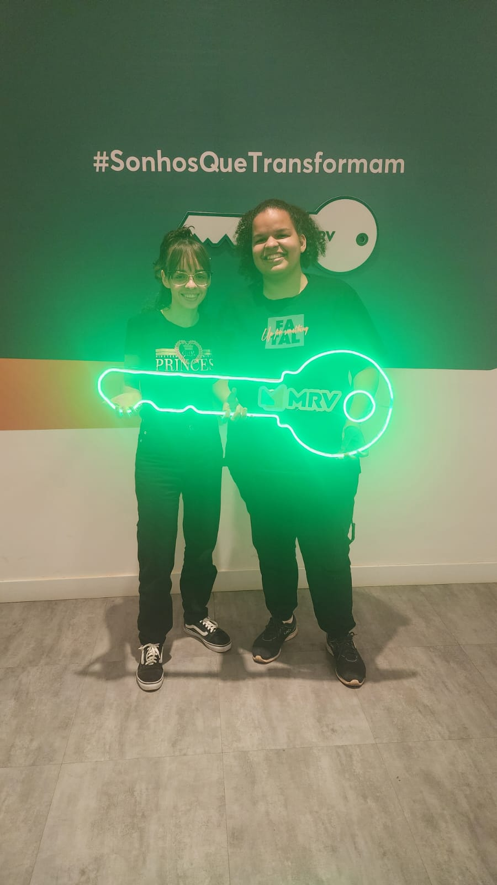
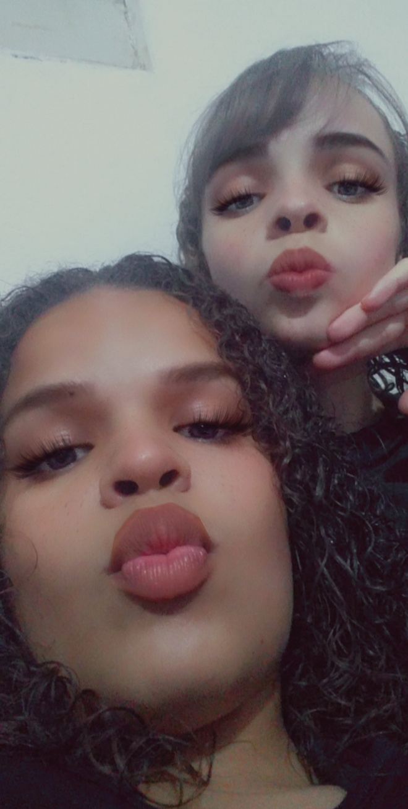
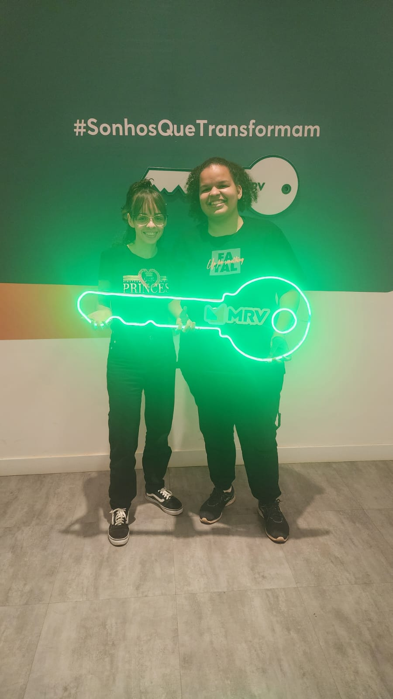

O Nosso Amor: Um Novo Começo
Em um mundo com bilhões de pessoas, eu tive a sorte de te conhecer. Você apareceu na minha vida de forma inesperada, de uma forma tão simples, e com isso, me fez entender o que realmente é o amor. Eu posso até tentar explicar o que me fez gostar de você, mas a verdade é que não sei exatamente. Talvez tenha sido o seu sorriso, tão genuíno, que sempre ilumina o meu dia, ou aquele jeito único de ser, que me faz sentir como se o tempo parasse sempre que estamos juntos. Ou talvez tenha sido o fato de, em cada conversa, eu perceber o quanto a vida era mais bonita ao seu lado. Você me faz rir das coisas mais simples, mas também me faz refletir sobre o que realmente importa. Quando penso em você, meu coração bate mais forte, e cada pequena lembrança, como a noite do pastel ou o sorvete caseiro que fizemos juntos, me faz sorrir. Essas pequenas coisas, que talvez passem despercebidas, são, na verdade, o que tornam tudo tão especial. Você é a minha tranquilidade em meio ao caos, e quando vejo a alegria nos seus olhos, tudo parece fazer sentido. Eu sei que enfrentamos dificuldades, como você escreveu em 3 de junho de 2022, quando disse que, apesar dos perrengues e das brigas, você não ia desistir de mim, porque queria lutar pelo nosso amor. É exatamente isso que eu sinto: a vontade de lutar, a vontade de crescer ao seu lado, sem medo, porque você já provou que o amor verdadeiro é aquele que persevera, mesmo nos momentos difíceis. Foi isso, foi você, que me fez perceber que encontrei minha verdadeira casa.
Você se tornou tudo para mim. Com você, até as coisas mais simples, como preparar um café ou caminhar pela rua, se transformam em momentos especiais. Eu adoro quando a gente fica em casa, e você me surpreende com aquele sorvete que só você sabe fazer – cada colherada é uma sensação de carinho. Ou quando passamos a noite assistindo a filmes enquanto comemos o nosso pastel caseiro, e mesmo nesses pequenos gestos, eu vejo o quanto você me faz feliz. Não é só o que você faz, é o que você é. É o seu jeito de me olhar, de me fazer sentir a pessoa mais importante do mundo, mesmo nas situações mais corriqueiras. Eu amo a maneira como você encontra a alegria nas pequenas coisas, como transformar uma noite simples em algo mágico. Com você, a vida é mais suave, mais leve, e tudo parece ter um propósito. Você é aquela pessoa que faz com que tudo ao seu redor seja mais bonito e mais divertido. O jeito como você me faz rir até quando o mundo parece pesado, o jeito como você me entende com um simples olhar... Isso é o que me faz te amar ainda mais. E mesmo nas dificuldades, como você mencionou em 12 de agosto de 2019, dizendo que, mesmo que o "pra sempre" tivesse um fim, estaríamos começando um novo e belo começo, sei que o nosso amor tem muito mais por vir. E é isso que quero, começar um novo capítulo na nossa história, junto a você.

Me apaixonei antes de te beijar, antes de tocar a sua pele. Me apaixonei pela pessoa que você é, pela forma como ilumina tudo ao seu redor com seu sorriso. Me apaixonei pelo seu jeito de ser tão único, pelas conversas mais profundas e pelas risadas mais bobas. Você me fez perceber que o que importa não são os grandes gestos, mas as pequenas coisas que se tornam únicas quando estamos juntos. Como as nossas noites de pastel, quando a gente fica rindo de qualquer bobagem, ou os dias em que, simplesmente, pegamos um sorvete feito em casa e nos esquecemos do mundo. Tudo isso se transforma em momentos eternos, que guardo no coração. Eu sei que você teve momentos de tristeza e medo, como você escreveu, temendo que o nosso amor fosse algo efêmero, mas hoje sei que somos mais fortes do que nunca. Com você, a vida é mais bonita e a felicidade se encontra nos detalhes. A verdade é que, a cada dia, eu aprendo a te amar de uma maneira nova, porque você me mostra que o amor é feito de simplicidade, de gestos diários e de uma companhia que faz a vida valer a pena. Eu nunca imaginei que encontraria alguém tão perfeito para mim, alguém que me fizesse sentir tão completa. Cada momento ao seu lado é único, e eu sou eternamente grato por você me fazer ver o mundo de uma forma mais linda.
Eu não preciso de grandes palavras ou gestos extraordinários para te pedir algo que vem do meu coração. Tudo o que quero, tudo o que sonho, é passar o resto da minha vida ao seu lado. Eu sei que temos muitos planos, muitos momentos ainda por viver, mas uma coisa eu sei com certeza: você é a pessoa com quem quero compartilhar todos esses momentos, não importa o que aconteça. Com você, tudo parece mais fácil, mais possível. E quando olho para nós dois, vejo que somos melhores juntos, que nossa história tem tudo para ser ainda mais linda. Sei que já passamos por muito, como você mesma disse, mas eu também acredito, como você mencionou, que quando duas pessoas se entregam uma pela outra e não colocam as dificuldades no caminho, Deus estará ao nosso lado. Por isso, agora, olhando nos seus olhos, com todo o amor que sinto por você, quero te fazer uma pergunta muito importante, uma pergunta que representa tudo o que passamos e o que ainda vamos viver juntos. Porque você é a razão do meu sorriso, da minha paz, e, mais do que tudo, você é a minha vida. Eu não quero mais passar um dia sequer sem você ao meu lado.
 



Peguei essas palavras de um autor desconhecido que, de alguma forma, consegui me identificar. Claro que fiz melhorias, porque o que ele escreveu tocou algo muito profundo dentro de mim, algo que eu queria expressar pra você naquele momento.
"Eu não quero ser a loucura da sua vida, não quero ser o caos nem qualquer um desses clichês de adolescentes que acham que ser intenso é sempre glamouroso. Eu não quero bagunçar nada, não quero desorganizar. Sabe o que eu quero? Quero ser o colo que vai te fazer esquecer por alguns minutos do seu dia difícil no trabalho, quero ser o cafuné que vai te fazer sentir até culpada por conseguir esquecer do mundo louco lá fora. Eu quero ser seu alento, ser a calmaria que, muitas vezes, eu mesma não sou nem pra mim. Quero ser o porto seguro que, às vezes, eu também não tenho. Quero ser o silêncio de cumplicidade, aquele momento em que você só quer reclamar, sem pedir conselhos ou dicas. Não quero ser a solução mágica para os seus problemas, quero ser só uma ilha de paz e carinhos em meio a todos eles. Quero ser aquele pensamento de alívio, como um 'Ah, que bom que tem ela!' em meio a uma reunião chata ou a um problema sério. Eu só quero estar lá, por perto, te lembrando de tomar os remédios, ajudando, sem fazer barulho, só te dando conforto. Quero bater na porta, tirar os sapatos, entrar e ficar ali, sem causar confusão, sem caos, só te admirando. Porque eu te admiro tanto. Quem seria louco o suficiente pra trazer caos e loucura pra alguém como você? Não, não eu. Eu quero só trazer colo, beijo, abraço, conforto, carinho e cuidado, sempre. Pra você, pra o que der e vier. Deixa?"